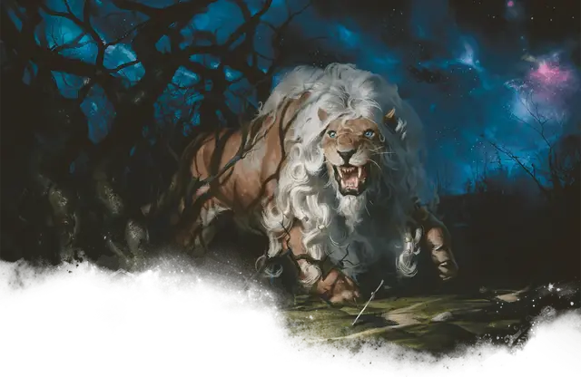

Руногривый лев
Fleecemane Lion
Большой Монстр, без мировоззрения

Класс Доспеха 12 (природный доспех)
Хиты 45 (6к10 + 12)
Скорость 50 футов
| мод | спас | ||
|---|---|---|---|
| СИЛ | 19 | +4 | +6 |
| ЛОВ | 16 | +3 | +3 |
| ТЕЛ | 14 | +2 | +4 |
| мод | спас | ||
|---|---|---|---|
| ИНТ | 6 | −2 | −2 |
| МДР | 14 | +2 | +2 |
| ХАР | 10 | +0 | +0 |
Навыки Восприятие +4, Скрытность +5
Чувства пассивное Восприятие 14
Опасность 3 (700 опыта)
Бонус мастерства +2
Особенности
Тонкий нюх. Лев совершает с преимуществом проверки Мудрости (Восприятие), полагающиеся на обоняние.
Наскок. Если лев переместится как минимум на 20 футов по прямой к существу, а затем в том же ходу попадет по нему атакой когтем, эта цель должна преуспеть в спасброске Силы Сл 14, иначе будет сбита с ног. Если цель сбита с ног, лев может бонусным действием совершить по ней одну атаку укусом.
Прыжок с разбега. При разбеге в 10 футов лев может прыгнуть в длину на 25 футов.
Отражение заклинаний. Лев совершает с преимуществом спасброски против любого заклинания, которое нацелено только на льва (а не на область). Если спасбросок льва успешен и заклинание имеет 4-й уровень или ниже, заклинание не оказывает никакого эффекта на льва и вместо этого нацеливается на заклинателя.
Действия
Мультиатака. Лев совершает две атаки: одну Укусом и одну Когтем.
Укус. Рукопашная атака оружием: +6 к попаданию, досягаемость 5 футов, одна цель. Попадание: 8 (1к8 + 4) колющего урона.
Коготь. Рукопашная атака оружием: +6 к попаданию, досягаемость 5 футов, одна цель. Попадание: 7 (1к6 + 4) рубящего урона.
Легендарные действия
Лев может совершать 2 легендарных действия, выбирая из указанных ниже вариантов. Лишь одно легендарное действие может быть совершено за раз, и только в конце хода другого существа. Лев восстанавливает истраченные действия в начале своего хода.
Коготь. Лев совершает одну атаку Когтем.
Рык (стоит 2 действия). Лев издает магический рык. Каждое существо в пределах 60 футов от льва, которое может услышать рык, должно совершить спасбросок Мудрости Сл 12, иначе станет испуганно львом до конца следующего хода льва.
Описание
В два раза крупнее обычного льва и с великолепной гривой из серебристой или золотистой шерсти, руногривые львы рыщут и защищают места, наполненные силой Нюкты. В то время как особенности связи этих огромных львов с Нюктой неясны, многие мифы рассказывают о смертоносных хищниках, преследующих смертных и сеющих страх, пока они в конечном итоге не будут побеждены храбрым охотником. В результате чего, победа над руногривым львом считается первым шагом на пути к тому, чтобы стать настоящим героем.